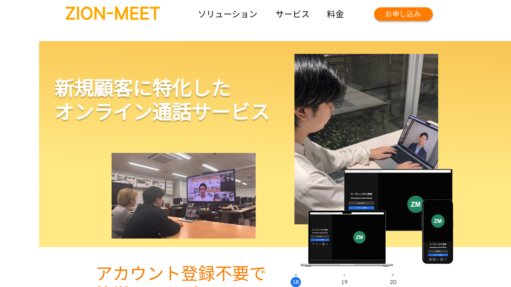
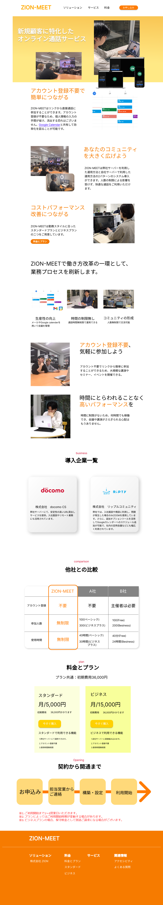
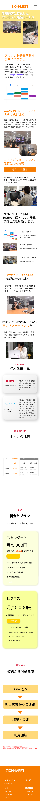

卒業・進級制作 | MTG作成会議システムZION-MEETのランディングページ制作
企画：３週間
デザイン：3週間
コーディング：3週間
ZION-MEET: 新規顧客に特化したオンライン通話サービス| ZION

制作概要
ZION-MEET
進級制作では株式会社ZION様のZION-MEETのランディングページを作成しました。身近なツールとして 感じてもらう為、親近感を意識した暖色系のオレンジと黄色を使い、スマホとパソコンを意識した デザインを工夫しました。
実装要件
レスポンシブ対応
Web上で表現できれば、技術は問わない
操作感やデザイン感（UI、UX）を重視する
PROCESS
企画書
全20枚


COLOR DESIGN
色彩設計
オレンジ、親近感と購買意欲を刺激するカラー
身近な通話の手段として利用してもらいたい→安心感や親近感
ビジネスツールとして利用してほしい→購買意欲を刺激
濃淡をつけることで見やすく、かつセクションの流れを視覚的に分かりやすくする。
メイン
#f67b00
サブ
#ffd97a
アクセント
#ff7b00
ベース
#ffffff
テキスト
#000000
リンク
#4b28fb
MOCK UP
モックアップ

